컴퓨터응용가공산업기사 (2010-09-05 기출문제)
1과목: 기계가공법 및 안전관리
1. 밀링작업에서 단식분할로 원주를 13등분 하고자 할 때 사용되는 분할판의 구멍수는?
- 37
- 38
- 39
- 41
(정답률: 86%)

2. 외경연삭기에서 외경 연삭의 이송방법이 아닌 것은?
- 테이블 왕복방식
- 연삭 숫돌대 방식
- 플랜지 컷 방식
- 내면 연수 방식
(정답률: 78%)
3. 안전표지에서 인화성 물질, 산화성 물질, 방사성 물질 등 경고 표지의 바탕색은?
- 빨강
- 녹색
- 노랑
- 자주
(정답률: 77%)
4. 공구의 수명을 판정하는 기준이 아닌 것은?
- 공구 인선의 마모가 일정량에 달했을 때
- 가공물의 완성치수 변화가 일정량에 달했을 때
- 절삭저항이 급격히 증가했을 때
- 표면에 광택 또는 반점이 있는 무늬가 없을 때
(정답률: 80%)
5. 트위스트 드릴 흠 사이의 좁은 단면 부분은?
- 날 여유
- 몸통 여유
- 지름 여유
- 웨브
(정답률: 77%)
6. 운반작업을 할 때의 작업 방법으로 틀린 것은?
- 물건을 들 때는 충격이 없어야 한다.
- 상체를 곧게 세우고 등을 반듯이 한다.
- 운반작업을 용이하게 하기 위해 간단한 보조구를 사용한다.
- 물건을 무릎을 편 자세에서 들어 올리거나 내려놓아야 한다.
(정답률: 88%)
7. 핸드 탭은 일반적으로 몇 개가 1조로 되어 있는가?
- 2개
- 3개
- 4개
- 5개
(정답률: 74%)
8. 드릴작업의 안전사항으로 틀린 것은?
- 드릴 소켓을 뽑을 때에는 드릴 뽑기를 사용한다.
- 얇은 판의 구멍 뚫기에는 보조 나무판을 사용한다.
- 구멍 뚫기가 끝날 무렵은 이송을 빠르게 한다.
- 장갑은 착용하지 않는다.
(정답률: 89%)
9. 밀링 부속장치 중 키 흠, 스풀라인, 세레이션 등을 기공 할 때 사용하는 것은?
- 래크절삭장치
- 만능바이스
- 캠 연삭기
- 슬로팅 장치
(정답률: 71%)
10. 선반 작업시 가공물이 무겁고 대형일 경우 센터(center) 선단의 각도는 몇 도의 것을 사용하는 것이 바람직한가?
- 45°
- 60°
- 90°
- 120°
(정답률: 73%)
11. 슈퍼 피니싱(Super finishing) 연삭맥 중 일반적으로 사용되지 않는 것은?
- 경유
- 유화유
- 스핀들유
- 기계유
(정답률: 47%)
12. 선반가공에서 칩을 처리하기 위한 연삭형 칩 브레이커의 종류가 아닌 것은?
- 고정형
- 평행형
- 각도형
- 흠 달린형
(정답률: 41%)
13. 가늘고 긴 공작물의 연삭에 적합한 특징을 가진 연삭기는?
- 외경 연삭기
- 내경 연삭기
- 센터리스 연삭기
- 나사 연삭기
(정답률: 90%)
14. 제품의 형상과 모양, 크기, 재질에 따라 제작된 공구로서 압입 또는 인발에 의한 가공방법으로 대량생산에 적합한 장비는?
- 세이퍼
- 머시닝센터
- 브로칭머신
- CNC선반
(정답률: 66%)
15. 그림과 같은 사인바의 높이(H)를 구하는 공식은?
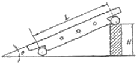
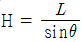
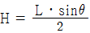
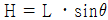
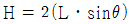
(정답률: 48%)
16. 액체 상태의 기름에 9.81N/cm2 정도의 압축공기를 이용하여 급유하는 방법으로 고속 연삭기, 고속 드릴 및 고속 베어링의 윤활에 가장 적합한 것은?
- 핸드 급유법
- 적하 급유법
- 분무 급유법
- 강제 급유법
(정답률: 58%)
17. 방전가공에서 전극재료의 구비조건이 아닌 것은?
- 기계가공이 쉬워야 한다.
- 방전이 안전하고 가공속도가 커야 한다.
- 가공정밀도가 높아야 한다.
- 가공전극의 소모가 빨라야 한다.
(정답률: 84%)
18. 선반 바이트에서 바이트 절인의 선단에서 바이트 밑면에 평행한 수평면과 경사면이 형성하는 각도는?
- 여유각
- 측면 절인각
- 측면 여유각
- 경사각
(정답률: 71%)
19. 안지름의 측정에 가장 적합한 측정기는?
- 텔레스코핑 게이지
- 깊이 게이지
- 레버식 다이얼 게이지
- 센터 게이지
(정답률: 66%)
20. 구성인선이 생기는 이유와 가장 거리가 먼 것은?
- 높은 압력
- 큰 마찰 저항
- 절삭 칩의 형태
- 절삭 열
(정답률: 69%)
2과목: 기계설계 및 기계재료
21. 탄소가 0.25%인 탄소강의 기계적 성질을 0~500℃에서 조사하면 200~300℃에서 인장강도가 최대치를, 연신율이 최저치를 나타내며 가장 취약하게 되는 현상은?
- 고온 취성
- 상온 충격치
- 청열 취성
- 탄소강 충격값
(정답률: 74%)
22. 표면 경화법에서 금속 침투법이 아닌 것은?
- 세라다이징
- 크로마이징
- 칼로라이징
- 방전경화법
(정답률: 83%)
23. 다음 중 항온 열처리의 종류에 해당되지 않는 것은?
- 마템퍼링
- 오스템퍼링
- 마퀜칭
- 오스드로잉
(정답률: 76%)
24. 다음 중 소결경질항금이 아닌 것은?
- 위디아(Widia)
- 탕가로이(Tangaloy)
- 카보로이(Carboloy)
- 프레티나이트(Platinite)
(정답률: 52%)
25. 다음 중 강자성체가 아닌 것은?
- Ni
- Cr
- Co
- Fe
(정답률: 56%)
26. 알루미늄 합금인 두랄루민의 표준성분에 포함된 금속이 아닌 것은?
- Mg
- Cu
- Ti
- Mn
(정답률: 79%)
27. 황동에서 잔류응력에 의해서 발생하는 현상은?
- 탈아연 부식
- 고온 탈아연
- 저온 풀림경화
- 자연균열
(정답률: 64%)
28. Fe-C 상태도 상에 나타나는 조직 중에서 금속간 화합물에 속하는 것은?
- Ferrite
- Cementite
- Austenite
- Pearlite
(정답률: 55%)
29. 피절삭성이 양호하여 고속 절삭에 적합한 강으로 일반 탄소강보다 인(P), 황(S)의 함유량을 많게 하거나 납(Pb), 셀레늄(Se), 지르코늄(Zr) 등을 첨가하여 제조한 강은?
- 쾌삭강
- 레일강
- 스프링강
- 탄소공구강
(정답률: 74%)
30. 다음 중 가열 시간이 짧고, 피가열물의 스트레인을 최소한으로 억제하며, 전자 에너지의 형식으로 가열하여 표면을 경화시키는 방법은?
- 침탄법
- 질화법
- 시안화법
- 고주파 담금질
(정답률: 71%)
31. 역류(逆流)를 방지하여 유체를 한쪽 방향으로만 흘러가게 하는 밸브는?
- 게이트 밸브
- 안전 밸브
- 체크 밸브
- 버터플라이 밸브
(정답률: 85%)
32. 하중 3kN이 걸리는 압축코일 스프링의 변형량이 10mm일 때 스프링 상수는 몇 N/mm인가?
- 300
- 1/300
- 100
- 1/100
(정답률: 67%)
33. 측선에서의 약간의 어긋남을 허용하면서 충격과 진동을 감소시키는 축이음은?
- 유니버셜조인트
- 플렉시블 커플링
- 클램프 커플링
- 올덤 커플링
(정답률: 59%)
34. 직경 50mm의 축이 78.4Nㆍm의 비틀림 모멘트와 49.0Nㆍm의 굽힘 모멘트를 동시에 받을 때, 축에 생기는 최대전단응력은 몇 MPa인가?
- 2.88
- 3.77
- 4.56
- 5.79
(정답률: 49%)
35. 베어링 하중 4.9kN, 회전수 4000rpm일 때 기본 부하용량이 61.74kN인 볼 베어링의 수명은 약 몇 시간인가?
- 8335 시간
- 19229 시간
- 9615 시간
- 16666 시간
(정답률: 44%)
36. 세로탄성계수 E(N/mm2)와 응력 σ(N/mm2), 세로변형률 ε과의 관계식으로 맞는 것은?
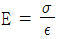
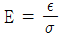
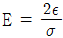
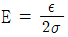
(정답률: 54%)
37. 다음 중에서 가장 큰 동력을 전달할 수 있는 것은?
- 안장 키
- 묻힘 키
- 납작 키
- 스플라인
(정답률: 71%)
38. 지름 20mm, 길이 500mm인 탄소강재에 인장하중이 작용하여 길이가 502mm가 되었다면 변형률은?
- 0.01
- 1.004
- 0.02
- 0.004
(정답률: 49%)
39. 암나사와 수나사가 결합되어 있을 때 암나사를 3회전 하였더니 축 방향으로 15mm, 산수는 6산 나간다. 이와 같은 나사의 조건은?
- 피치 : 2.5mm, 리드 : 5mm
- 피치 : 2.5mm, 리드 : 2.5mm
- 피치 : 5mm, 리드 : 10mm
- 피치 : 5mm, 리드 : 5mm
(정답률: 60%)
40. 임의 점에서 직선 거리 L만큼 떨어진 곳에서 힘 F가 직선 방향에서 수직하게 작용할 때 발생하는 모멘트 M을 바르게 나타낸 것은?
- M = F × L
- M = F / L
- M = L / F
- M = F + L
(정답률: 71%)
3과목: 컴퓨터응용가공
41. 중앙처리장치(CPU : Central Processing Unit)의 구성 요소가 아닌 것은?
- 제어장치
- 연산논리장치
- 입력장치
- 기억장치
(정답률: 62%)
42. 다음 중 특징 형상 모델링(feature-based modeling)에 대한 설명이 아닌 것은?
- 특징 형상은 설계자에게 친숙한 형상단위로 물체를 모델링 할 수 있게 해준다.
- 전형적인 특징 형상으로는 모따기, 구멍, 필릿, 슬롯, 포켓 등이 있다.
- 특징형상은 각 특징들이 가공단위가 될 수 있기 때문에 공정계획으로 사용 될 수 있다.
- 스위핑은 특징 형상 모델링의 한 방법이다.
(정답률: 56%)
43. 원형 형상의 제품가공 시 바깥쪽에서 안으로 또는 안쪽에서 바깥쪽으로 단일 공구경로를 생성하는 방법으로, 절삭저항이 일정하게 유지되게 하는 공구경로 연결방법은?
- 나선형 연결방법
- 등고선 연결방법
- 가이드곡선 연결방법
- 방향(X, Y, 각도) 연결방법
(정답률: 52%)
44. 3차원 솔리드 모델의 생성을 위해 사용되는 기본 입체(primitive)라고 할 수 없는 것은?
- 구(Sphere)
- 원통(Cylinder)
- 에지(Edge)
- 원뿔(Cone)
(정답률: 84%)
45. 2차원 도형을 미리 정해진 선의 궤적을 따라 이동시키거나 임의의 회전축을 중심으로 회전시켜 입체를 생성하는 기능은?
- 불리안(boolean) 작업
- 스위핑(sweeping)
- 스키닝(skinning)
- 라운딩(rounding)
(정답률: 75%)
46. 다음의 두 3차원 벡터 A, B의 벡터 곱 C는? (단, C=B×A, A=3i-2j-k, B=i-3k)
- -2(3i+4j-k)
- -2(3i+4j+k)
- -2(3i-4j-k)
- -2(3i-4j+k)
(정답률: 42%)
47. 머시닝 센터에서 팔렛을 자동으로 교환하는 장치는?
- ATC
- MCU
- APC
- PLC
(정답률: 67%)
48. 번스타인 다항식(Bernstein polynomial)을 근본으로 하여 만들어낸 곡면은?
- 이차식 곡면(Quadric surface)
- 베지어 곡면(Bezier surface)
- 스플라인 곡면(Spline surface)
- 조화된 다항식 곡면(Blended polynomial surface)
(정답률: 74%)
49. 두 곡선(curve) 사이에서 선형 보간으로 곡면(surface)을 작성하는 도형처리 기법과 가장 관계 깊은 것은?
- Taculated Surface
- Lofted Surface
- Ruled Surface
- Revolved Surface
(정답률: 61%)
50. DXF(Data Exchange File) 파일의 섹션구성에 해당되지 않는 것은?
- header section
- library section
- table section
- entity section
(정답률: 58%)
51. 솔리드(solid) 모델링의 설명으로 틀린 것은?
- 은선 제거 및 단면도 작성이 불가능하다.
- 부피, 관성모멘트를 계산할 수 있다.
- 중량해석, 유한요소해석을 할 수 있다.
- 조립체 설계시 위치, 간섭 등의 검토가 가능하다.
(정답률: 75%)
52. NURBS 곡선에 대한 설명이 아닌 것은?
- Conic 곡선을 표현할 수 있다.
- Blending 함수는 B-spline과 같은 함수를 사용한다.
- 조정점의 가중치(weight)를 변경하여 곡선 형상을 변화시킬 수 있다.
- 국부적인 형상 조정이 곡선 전체에 전파되므로 모델링 작업이 효율적이다.
(정답률: 43%)
53. 도면을 파악하고 나서 생산성을 높이기 위해 장비 선정, 공구 선정, 가공 순서, 절삭 조건 등을 세우는 작업은?
- 도면해독
- 가공 공정 계획
- 프로그램 작성
- NC 데이터 검증
(정답률: 87%)
54. Bezier 곡선에 관한 설명으로 잘못된 것은?
- 곡선의 모양이 복잡할수록 이를 표현하기 위한 조정점이 많아지고 곡선식의 차수가 높아진다.
- 곡선 형상을 국부적으로 수정하기 어렵다.
- 조정점의 블렌딩(blending)으로 곡선식이 표현된다.
- N차 Bezier 곡선의 조정점(control point)은 N개다.
(정답률: 68%)
55. 다음 중 디지털 목업(digital mock-up)에 관한 설명으로 가장 거리가 먼 것은?
- 실물 mock-up의 사용빈도를 줄일 수 있는 대안이다.
- 간섭검사, 기구학적 검사 그리고 조립체 속을 걸어 다니는 듯한 효과 등을 낼 수 있다.
- 디지털 목업을 생성하기 위해서는 제품을 구성하는 각 부품에 대한 솔리드나 서피스 모델이 필요하다.
- 조립체 모델링에는 아직 적용되지 않는다.
(정답률: 66%)
56. 다음과 같은 2차원 동차 변환 행렬식에서 l, m과 관계가 있는 것은?
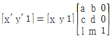
- 자료의 이동
- 자료의 확대ㆍ축소
- 자료의 회전
- 자료의 x축 또는 y축 기준 대칭
(정답률: 67%)
57. 다음 중 가상 시작품(virtual prototype)에 대한 설명으로 가장 거리가 먼 것은?
- 각 부품의 형상 모델을 컴퓨터 내에서 완전히 조립한 시작품 조립체를 말한다.
- 가상 시작품을 사용하여 제품의 조립 가능성을 미리 검사해 볼 수 있다.
- 설계시 문제점을 검출하고 수정하는데 도움을 준다.
- NC 공구 경로를 미리 시뮬레이션함으로써 가공상의 문제점을 미리 확인할 수 있다.
(정답률: 61%)
58. 와이어프레임 모델링 시스템에 관한 설명 중 틀린 것은?
- 모델의 은선 처리가 어렵다.
- 3차원 물체의 형상을 표현한다.
- 물체상의 점, 선, 면 정보로 구성된다.
- 공학적 해석을 위한 유한요소를 생성할 수 없다.
(정답률: 47%)
59. 3차원변환을 위한 동차좌표계의 변환행렬은 4×4 행렬로 표현되며 보기와 같이 4개의 소행렬로 분할할 수 있다. 이중 좌상단의 3×3 소행렬에서 수행되는 역할이 아닌 것은?
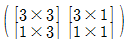
- 크기(scaling)
- 이동(translation)
- 회전(rotation)
- 전단(shearing)
(정답률: 47%)
60. 2차원에서 하나의 원을 정의하는 방법으로 틀린 것은?
- 원의 중심과 반지름
- 일직선상에 놓여 있지 않은 임의의 3점
- 기울기가 서로 다른 세 개의 직선에 접하는 원
- 중심과 원주상의 한 점
(정답률: 64%)
4과목: 기계제도 및 CNC공작법
61. 그림과 같은 기호에서 “2.5”가 나타내는 것은?
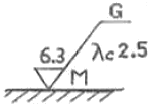
- 표면 거칠기의 상한치
- 표면 거칠기의 하한치
- 컷 오프 값
- 표면 정도 기호
(정답률: 79%)
62. 나사의 도시에서 수나사와 암나사의 골지름은 어떤 선으로 그리는가?
- 굵은 실선
- 가는 실선
- 파선
- 가는 1점 쇄선
(정답률: 63%)
63. 그림과 같은 도형에서 화살표 방향에서 본 투상을 정면으로 할 경우 우측면도로 올바른 것은?
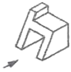
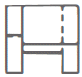
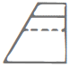
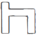
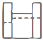
(정답률: 84%)
64. 다음 중 현의 치수 기입을 나타낸 것은?
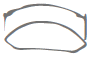
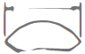
(정답률: 67%)
65. 축 기준식 끼워맞춤 공차 기호에서 위치수 허용차가 0인 공차역 기호는?
- b
- g
- h
- s
(정답률: 70%)
66. 일반적인 스케치 작업 중 재질 판정을 위한 방법으로 적합하지 않은 것은?
- 색깔이나 광택에 의한 법
- 피로 시험에 의한 법
- 불꽃 검사에 의한 법
- 경도 시험에 의한 법
(정답률: 47%)
67. 다음 나사 표시 그림 중 미터 가는 나사에 해당하는 것은?
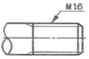
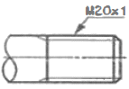
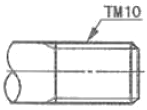
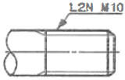
(정답률: 68%)
68. 가공 방법에 따른 KS 가공 방법 기호가 올바르게 연결된 것은?
- 방전 가공 : SPED
- 전해 가공 : SPU
- 전해 연삭 : SPEC
- 초음파 가공 : SPLB
(정답률: 53%)
69. 그림과 같이 표시된 기호에서 Ⓜ 은 무엇을 나타내는가?
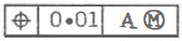
- A의 원통 정도를 나타낸다.
- 기계 가공을 나타낸다.
- 최대 실체 공차 방식을 나타낸다.
- A의 위치를 나타낸다.
(정답률: 61%)
70. 다음 도면에서 센터의 길이 ℓ로 표시된 부분의 길이는? (단, 테이퍼는 1/20 이고 단위는 mm임)
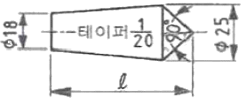
- 82.5
- 140
- 152.5
- 292.5
(정답률: 55%)
71. CNC 서보기구 제어시스템 특성 중 closed loop 제어 방식을 가장 올바르게 설명한 것은?
- 모터 측으로부터 위치검출을 행하여 볼나사의 회전각도를 검출하는 방식
- 기계의 테이블에 부착된 직선 scale이 위치 검출을 행하여 피드백하는 방식
- 모터 축으로부터 위치검출을 리졸버에 의하여 제어하는 방식
- 모터 축으로부터 위치검출을 직선 scale에 의하여 제어하는 방식
(정답률: 53%)
72. CNC선반의 인서트 팁 규격(ISO)에서 G가 의미하는 것은?
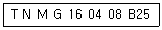
- 팁 형상
- 단면 형상
- 절삭날 길이
- 날 끝 반지름
(정답률: 50%)
73. CNC프로그램에서 공구 교환장소로 제2원점을 설정하여 사용하고자 한다. 공구를 제2원점으로 복귀하고자 할 경우에 사용하는 코드는?
- G27
- G28
- G29
- G30
(정답률: 56%)
74. CNC 선반을 사용하여 600rpm으로 회전하는 스핀들에서 5회전 드웰을 프로그래밍하려면 몇 초간 정지 지령을 사용하는가?
- 0.1초
- 0.5초
- 1.0초
- 1.2초
(정답률: 60%)
75. 일반적인 CNC공작기계에 무인운전을 위해 추가로 갖추어야 할 사항이 아닌 것은?
- 자동 칩 제거장치
- 자동 공작물 반입장치
- 절삭 장치
- 자동 계측 보정기능
(정답률: 62%)
76. CNC선반에서 직선절삭 기능에 해당되는 준비기능은?
- G00
- G01
- G02
- G03
(정답률: 82%)
77. 머시닝센터에서 스핀들 알람(Spindle Alarm)의 원인과 가장 관련이 적은 것은?
- 주축 모터의 과열
- 주축 모터의 과부하
- 공기압 부족
- 주축 모터에 과전류 공급
(정답률: 78%)
78. CNC 와이어 컷 방전가공 중 가공물의 치수정도 중 진직정도에 영향을 주는 큰북 형상의 발생 원인이 아닌 것은?
- 와이어의 진동
- 가공액 분사 압력의 차이
- 세컨드 컷(second cut)에 의한 가공
- 가공 칩에 대한 2차 방전
(정답률: 55%)
79. 머시닝센터의 공구 보정에 대한 설명 중 틀린 것은?
- 프로그램에 의한 보정량의 압력은 G20 P_ R_ ; 이다.
- G40 기능은 공구지름 보정 취소이다.
- 공구길이 보정 준비기능은 G43, G44이다.
- G42는 공구지름 우측 보정 기능이다.
(정답률: 57%)
80. 다음은 머시닝센터의 고정 사이클 구멍가공 모드 지령 방법이다. 여기서 P가 의미하는 것은?
- 구멍바닥에서 휴지시간
- 고정 사이클 반복횟수
- 절삭 이송속도
- 초기 점에서부터 거리
(정답률: 74%)